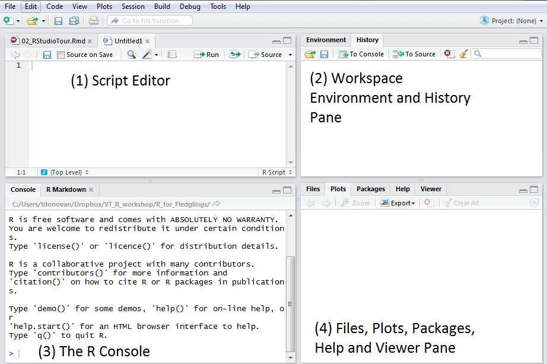
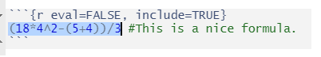
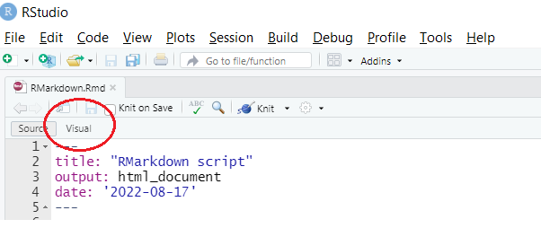
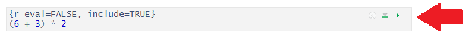
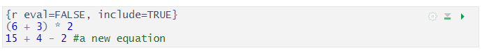
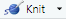
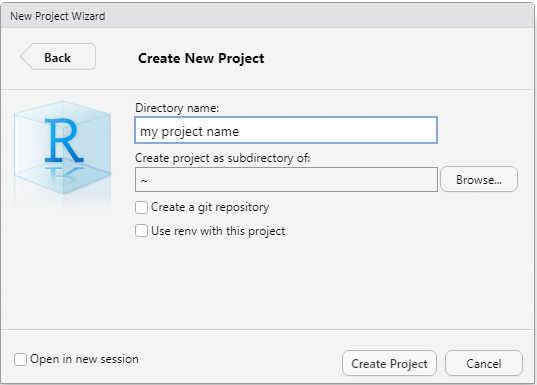
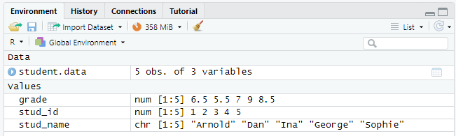

+ Optellen
- Aftrekken
* Vermenigvuldigen
/ Delen
^ Machtsverheffen1 Werken met R en RStudio: de basis
Wanneer je RStudio opent, zie je vier vensters (ook wel panes genoemd). Je kunt de volgorde van de vensters veranderen onder View > Panes. Je kunt ook de vorm veranderen door te klikken op de knoppen minimaliseren of maximaliseren rechtsboven in elk paneel. Voor deze cursus is het het beste als je alle vensters op hun oorspronkelijke plaats laat staan.
Het paneel ‘Source’ (bron) is waar je R scripts maakt en bewerkt (meer hierover hieronder). Wordt ook wel de script editor genoemd.
Het deelvenster ‘Environment/History’ (Omgeving/Geschiedenis): Hier toont R je de namen van alle data-objecten (zoals vectoren, matrices en dataframes) die je in je huidige R-sessie hebt geopend en toont je informatie zoals het aantal observaties en kolommen in data-objecten. Het tabblad History (Geschiedenis) toont je een geschiedenis van alle code die in de Console werd uitgevoerd.
De console is de plaats waar R daadwerkelijk code uitvoert. Aan het begin van de console zie je het teken ‘>’. Je kan code rechtstreeks in de console typen en onmiddellijk een antwoord krijgen. Als je bijvoorbeeld 1+1 in de console typt en op ENTER drukt, geeft R onmiddellijk een output van 2.
Het paneel ‘Files/Plots/Packages/Help’ (Bestanden/Plots/Pakketten/Help) toont heel wat nuttige informatie.
- Files - Geeft toegang tot de bestandsmap op je harde schijf.
- Plots - Toont al je plots/grafieken.
- Packages - Overzicht van alle packages die zijn geïnstalleerd (zie meer hieronder)
- Help - Informatie en hulp over R functies.

1.1 Interactie met de console: R als rekenmachine gebruiken
R kan gebruikt worden als een krachtige rekenmachine. Je kunt eenvoudig wiskundige bewerkingen direct op de prompt in de console invoeren. Typ gewoon je rekenkundige bewerkingen en druk op ENTER op Windows-toetsenborden en op RETURN op Mac-toetsenborden.
Voor eenvoudige rekenkundige bewerkingen gebruikt R de volgende operatoren:
1.1.1 Haakjes gebruiken
Als je 6 en 3 wilt optellen en daarna het resultaat met 2 wilt vermenigvuldigen, moet je haakjes toevoegen. Dit legt een volgorde op voor de berekening van het resultaat (d.w.z. eerst 6 en 3 optellen en dan delen door 2). In het geval van dit voorbeeld, zou je kunnen invoeren
(6 + 3) * 2[1] 181.1.2 Meer complexe vergelijkingen
Je kunt meer complexe uitdrukkingen schrijven die haakjes en operatoren gebruiken.
De volgorde waarin R bovenstaande operatoren uitvoert is1:
- haakjes
- machtsverheffen en worteltrekken
- vermenigvuldigen en delen van links naar rechts
- optellen en aftrekken van links naar rechts.
Neem de volgende vergelijking:
\[ \frac{18 * 4^2 - (4+2)}{3} \]
Je voert dit als volgt in de RStudio console in:
(18 * 4 ^ 2 - (5 + 4))/3[1] 93Merk op hoe je de volgorde van evaluatie kunt bepalen door haakjes te gebruiken.
- Intern berekent R eerst
18 * 4 ^ 2(= 288). Het volgt de hierboven beschreven regels, dus er is geen noodzaak om een haakje rond4^2te zetten. Exponenten worden berekend vóór de vermenigvuldiging, dus hoeven we dit niet aan te geven via een haakje. - Hiervan trekken we
5 + 4af (288 - 9 = 279). - Ten slotte delen we door 3.
1.2 base R en packages
Wanneer je R downloadt van het Comprehensive R Archive Network (CRAN), krijg je het ‘basis’ R-systeem (‘base R’). Deze software bevat basisfunctionaliteit en implementeert de R-taal. Een van de redenen waarom R zo nuttig is, is echter de grote verzameling van aanvullende pakketten (packages) die de basisfunctionaliteit van R uitbreiden. R-pakketten worden ontwikkeld en gepubliceerd door de grote R-gemeenschap. Er zijn duizenden packages beschikbaar die een breed scala van onderwerpen bestrijken.
De primaire locatie voor het verkrijgen van R packages is CRAN. Er zijn enkele bijkomende locaties, maar daar hoef je je voorlopig geen zorgen over te maken.
1.2.1 Installeren en laden van een R package
Om een package te installeren, gebruik je de install.packages() functie en dan schrijf je de naam van het package. Je moet aanhalingstekens plaatsen rond de naam van het pakket, dus install.packages("<de naam van het pakket>"). Als je bijvoorbeeld het pakket rio wilt installeren (een R-pakket dat het importeren en exporteren van gegevens in R heel snel maakt), dan schrijf je:
install.packages("rio")R installeert automatisch alles wat het nodig heeft. Als je eenmaal een package hebt geïnstalleerd, blijft het op je laptop staan. Het installeren van een R-pakket hoeft dus maar één keer gedaan te worden (totdat je R opnieuw installeert).
Waarschuwing
Let op: Packages die nodig zijn voor deze cursus zijn voorgeïnstalleerd op alle PC’s van de Universiteit Leiden. Daarom kan deze stap overgeslagen worden als je op PC’s van de universiteit werkt en kun je ze gewoon laden (zie volgende stap). Als je een eigen laptop gebruikt, moet je het package wel eerst installeren.
Het installeren van een package maakt het niet direct beschikbaar voor je in R. Voordat je het package en de bijbehorende functies kunt gebruiken, moet je het in R laden. Om packages in R te laden, wordt de library() functie gebruikt. Bij het laden van een package, gebruik je geen aanhalingstekens. Om het ‘rio’ pakket in R te laden, schrijf je:
library(rio)Als je een pakket probeert te laden dat niet is geïnstalleerd, krijg je een foutmelding (‘Error in library(rio) : there is no package called 'rio'’).
1.3 R Scripts
Het console venster (in RStudio, het onderste linker paneel) is de plaats waar je commando’s rechtstreeks in de console kan typen, maar deze worden vergeten wanneer je R afsluit.
Vaak willen we niet alleen in de console werken, maar willen we onze code bewaren en opslaan. Een veelgebruikte manier om dit te doen is door te werken in een R script. Dit is een tekstbestand dat alle R code bevat die je wilt uitvoeren. Dit houdt alles mooi georganiseerd.
Het is gemakkelijk om een nieuw script te maken in RStudio. We kunnen daarvoor het menu gebruiken (“File” → “New File” → “R Script”) of met de sneltoets “Command+Shift+N” op een Mac of “Ctrl+Shift+N” op Windows en Linux. Daarna verschijnt de editor als een nieuw deelvenster in de linkerbovenhoek van het RStudio venster.
In een R Script kun je alle code schrijven die nodig is voor je project. We zouden bijvoorbeeld deze drie regels kunnen schrijven:
print("Dit is mijn eerste R Script")
1+1
17-8*21.3.1 R Scripts annoteren
Je kan commentaar toevoegen door het R Script te annoteren (van commentaar voorzien). Het annoteren maakt het veel gemakkelijker voor jezelf of mensen met wie je samenwerkt. Je gebruikt het symbool # om een annotatie te starten. Wanneer je een commando uitvoert, zal R alles na dit symbool negeren. In een script negeert R alles wat na # komt op de betreffende regel, maar zal het wel de volgende regels weer uitvoeren.
Terugkomend op het eerdere voorbeeld, stel dat je een commentaar wilt toevoegen na de formule dan kun je schrijven:
(18 * 4 ^ 2 - (5 + 4))/3 # Dit is een prachtige rekensom1.3.2 Uitvoeren van code in R scripts
Om een commando in een R script uit te voeren, heb je verschillende opties:
- Zet de cursor op de regel van het commando en klik vervolgens op de knop ‘Uitvoeren’ bovenin het bestandsvenster.
- Plaats de cursor op de regel van het commando en druk op CTRL + ENTER op Windows PC’s of COMMAND ⌘ + RETURN Mac.
- U kunt ook de hele regel selecteren en op ‘Uitvoeren’ of CTRL/COMMAND ⌘ + RETURN drukken). Merk op dat als je dit doet je de hele regel moet selecteren. Anders zal R alleen het deel van het commando uitvoeren dat je gemarkeerd hebt.

Nadat je op ‘Run’ of CTRL + ENTER hebt gedrukt, zal R het commando uitvoeren.
Als je een annotatie hebt toegevoegd (zie hierboven), zal R de tekst achter # uitsluiten.
Je kunt natuurlijk meerdere regels uitvoeren. Bijvoorbeeld, als je R Script deze drie commando’s bevat:
print("Dit is mijn eerste R Script")
1+1
17-8*2Je kunt alles wat je wilt uitvoeren (dus de hele tekst of de eerste twee regels, enz.) selecteren met je muiscursor en dan klikken op de knop ‘Uitvoeren’ bovenin het bestandsvenster of op CTRL + ENTER drukken op Windows PC’s of COMMAND ⌘ + RETURN op Mac.
1.3.3 Een bestaand R Script opslaan / openen
Je kunt je script opslaan door te klikken op File → “Save as…” of door te klikken op het Save icoon bovenaan het Script Editor paneel (sneltoets: CRTL + S of COMMAND ⌘ + S). Als je dat doet, opent zich een venster Save File. Geef het R Script een informatieve naam en open het later. U kunt een bestaand R-script openen via File → “Open file…”
1.4 R Markdown bestand
Een ander veelgebruikt formaat is het R Markdown bestand. Een R Markdown document is een combinatie van geschreven tekst met simpele opmaak en stukken ingesloten R code (zogenoemde code chunks). Het mooie aan R Markdown is dat je code chunks (en in-line code) kan invoegen om uitvoer en statistische analyse te rapporteren.
Zodra je een RMarkdown bestand exporteert, kun je je tekst omzetten in documenten, rapporten, presentaties en dashboards van hoge kwaliteit.
Opmerking
RStudio zal automatisch het benodigde rmarkdown package installeren en laden wanneer nodig.
Opmerking
Naast Rmarkdown bestaat er ook een Quarto document. Dit is een zeer vergelijkbaar type document. Dit boek is gemaakt met behulp van Quarto.
1.4.1 R Markdown bestanden bewerken
Voorlopig hoef je niet te weten hoe je R Markdown bestanden maakt. We zullen ze echter in de loop van de cursus gebruiken voor oefeningen en opdrachten, dus je moet weten hoe je erin moet werken.
R Markdown bestanden hebben de extensie .Rmd. Zodra je ze aanklikt, zou R Studio ze moeten openen. Als dat niet het geval is, kun je ze openen via ” File” → “Open File”. Als je ze voor het eerst opent, zullen ze eruit zien als een R Script (met wat gekleurde code). Het is gemakkelijker om er in te werken in de “Visuele” modus. Op Windows PC’s kun je naar deze modus overschakelen via ‘CTRL + SHIFT + F4’, op Macs via ‘COMMAND ⌘ + SHIFT + F4’. Je kunt ook klikken op de knop ‘Visual’.

Om code uit te voeren, kun je de code selecteren en op ‘CTRL + ENTER’ (‘COMMAND + RETURN’ op Macs) drukken of, als alternatief, op het kleine groene pijltje klikken.

Je kunt de code in het ‘code chunk’ ook aanpassen of nieuwe code toevoegen:

Zodra je de code hebt uitgevoerd, zal R de resultaten tonen onder de ‘code chunk’.
1.4.2 Een R Markdown bestand ‘knitten’
Je kunt je markdown-bestand omzetten in een HTML-, PDF- of Word-document dat je kunt uploaden op Brightspace. Klik hiervoor op het Knit icoon dat bovenaan je script. Hierna wordt een document gegenereerd dat zowel de inhoud als de uitvoer van alle ingesloten code chunks in het document bevat.

Je kunt je .Rmd bestand opslaan met ” File” → “Save File As…”.
1.5 Een R-project opzetten
Wanneer je met R werkt, zal je waarschijnlijk verschillende bestanden hebben: een bestand met de data set, een bestand met je R script (of R Markdown bestand) en misschien output die je bewaart. Om alle bestanden met betrekking tot een project bij elkaar te houden en het overzicht te bewaren, raden we aan een R Project op te zetten.
Klik op “File” → “New Project”
Klik op “New directory” en dan op “New Project”
Voer je projectnaam in bij ‘Directory name’ en geef aan in welke map het project komt te staan door op ‘Browse’ te klikken en een map te selecteren. Klik dan op “Create Project” (Project aanmaken)

R zal nu het project aanmaken en de map openen in de Bestanden weergave onderaan het project.
Tip
Stel een Project op voor deze cursus, en bewaar alle opdrachten, oefeningen en gegevensbestanden voor deze cursus in de projectmap/directory.
Met “File → Open Project” kun je een bestaand project openen en er verder aan werken.
1.6 Handmatig gegevens invoeren in R
In R is de belangrijkste en meest gebruikte manier om gegevens in te voeren de operator met het pijltje naar links (<-). Deze toewijzingsoperator wordt gebruikt om een waarde toe te wijzen.
De combinatie object <- inhoud betekent “wijs de waarde van het resultaat van de bewerking aan de rechterkant (‘inhoud’) toe aan het object aan de linkerkant (‘object’)”.
R kan ook overweg met andere toewijzingsoperatoren, maar onze suggestie is om de <- operator te gebruiken. Dit is de meest conventionele toewijzingsoperator die wordt gebruikt en is wat je zult vinden in alle basis R broncode.
1.6.1 Gegevens opslaan in een object
R kan omgaan met veel verschillende vormen van invoer (tekst, getallen, data, enz,). Je kan bepalen welk soort gegevens in een object worden opgeslagen. Stel dat we de numerieke waarde 12 willen toewijzen aan een object met de naam my_first_variable.
We maken een object aan met de naam my_first_variable (merk op dat er geen spatie in de naam mag staan) en kennen er één waarde (12) aan toe. Om dit in R te doen gebruiken we <-. De code wordt dan:
my_first_variable <- 12We kunnen vervolgens laten printen wat de inhoud van my_first_variable is door de naam in te typen (en daarna de code te draaien):
my_first_variable [1] 12Als we het datatype controleren via class(), kunnen we zien dat dit een ‘numeriek’ object is. Dit wordt gebruikt voor getallen.
class(my_first_variable)[1] "numeric"Op dit punt is het misschien goed om op te merken dat R een hoofdlettergevoelige programmeertaal is. Dit betekent dat alle variabelen, functies en objecten moeten worden aangeroepen met hun exacte spelling. Als je het object my_first_variable probeert aan te roepen door My_first_variable te schrijven (let op de hoofdletter ‘M’), zal R het object niet kunnen vinden en een foutmelding weergeven:
My_first_variableError in eval(expr, envir, enclos): object 'My_first_variable' not foundNatuurlijk kunnen we ook decimale getallen invoeren. Je moet hiervoor een ‘punt’ als decimaalscheidingsteken gebruiken:
my_second_variable <- 6.521
my_second_variable [1] 6.521Wanneer we de class van dit object inspecteren, zien we dat het weer een numeriek (numeric) object is.
class(my_second_variable)[1] "numeric"We kunnen ook tekst opslaan. In R wordt tekst een ‘character’ (karakter) object of ‘string’ (tekenreeks) genoemd. Een string is een stuk tekst dat wordt voorgesteld als een opeenvolging van tekens (letters, cijfers en symbolen). Hij kan uit één of meerdere tekens bestaan. Elke waarde die in R binnen een paar enkele of dubbele aanhalingstekens wordt geschreven, wordt behandeld als een tekenreeks. Het is gebruikelijker om dubbele aanhalingstekens (““) dan enkele aanhalingstekens (’’) rond de tekst te gebruiken. Dit zal een character variabele creëren.
a_text_variable <- "Hallo, wereld"
a_text_variable[1] "Hallo, wereld"Zoals hierboven uitgelegd, kun je dubbele aanhalingstekens of enkele aanhalingstekens gebruiken. Hoewel dit tot hetzelfde resultaat zal leiden, raden we aan dubbele aanhalingstekens te gebruiken.
a_text_variable <- 'Hallo wereld'
a_text_variable[1] "Hallo wereld"1.6.2 Een vector creëren
Tot nu toe bevat ons object slechts één waarde. Als we verschillende waarden willen opslaan, moeten we een vector maken. Vectoren zijn essentiële objecten in R. Zij zijn de bouwsteen voor data frames die wij later zullen behandelen. Laten we een numerieke vector maken die alle getallen van 1 tot 5 en de waarde 8.5 bevat. Om dit te doen gebruiken we c(). De “c” in c() staat voor combineren.
my_first_vector <- c(1, 2, 3, 4, 5, 8.5)
my_first_vector[1] 1.0 2.0 3.0 4.0 5.0 8.5Als we het datatype controleren via class(), kunnen we zien dat dit een ‘numeriek’ object is. Dit wordt gebruikt als de waarden getallen zijn of als de waarden decimalen bevatten.
class(my_first_vector)[1] "numeric"We kunnen ook een vector maken met tekst in plaats van getallen.
color_vector <- c("blue", "red", "green", "white", "black", "yellow")
color_vector[1] "blue" "red" "green" "white" "black" "yellow"Zoals hierboven is aangegeven, gebruikt R het datatype karakter' bij het opslaan van tekst. Als we het datatype controleren viaclass()`, kunnen we zien dat dit een ‘character’ object is.
class(color_vector)[1] "character"Kunnen we getallen en tekst combineren? Nee. Vectoren zijn beperkt tot 1 type gegevens (d.w.z. je kunt getallen of tekenreeksen opslaan, maar niet beide). Wat gebeurt er als we getallen en tekenreeksen mixen?
mixed_vector <- c(1, "red", 3, "white", "black", 6)R maakt de vector, maar maakt er automatisch een character vector van (zie de dubbele aanhalingstekens als we de vector aanroepen en de output van class(mixed_vector)):
mixed_vector[1] "1" "red" "3" "white" "black" "6" class(mixed_vector)[1] "character"1.6.3 Variabelen creëren in R
Nu we weten hoe we gegevens moeten opslaan, kunnen we ze gebruiken om categoriale en continue variabelen te maken.
1.6.3.1 Categoriale gegevens: Factors
Voor categoriale gegevens (nominale en ordinale variabelen), gebruiken we een factor. Factoren worden gebruikt om de gegevens te categoriseren en op te slaan als niveaus. Ze kunnen zowel tekens als getallen (gehele getallen, decimalen) opslaan.
1.6.3.1.1 Nominale variabelen
Stel dat we een nominale variabele met windrichtingen hebben. Eerst maken we een vector als invoer:
data <- c("East", "West", "East", "North", "North", "East", "West", "West", "West", "East", "North")Tot nu toe is dit gewoon een character vector. Als we de inhoud ervan printen krijgen we:
data [1] "East" "West" "East" "North" "North" "East" "West" "West" "West"
[10] "East" "North"Om R te laten weten dat dit een categoriale variabele is, moeten we specificeren dat het een factor is. We kunnen dit doen door factor() toe te voegen rond de expressie:
directions <- factor(c("East", "West", "East", "North", "North", "East", "West", "West", "West", "East", "North"))Intern slaat R deze factoren op als gehele getallen (integers), en gebruikt de strings als labels. Als we de inhoud van dit object laten zien, krijgen we:
directions [1] East West East North North East West West West East North
Levels: East North WestZoals je kunt zien, behandelt R dit nu als een categoriale (nominale) variabele.
We kunnen ook meer informatie krijgen over de unieke waarden van onze factor door levels() te gebruiken2:
levels(directions)[1] "East" "North" "West" Het gebruik van strings voor factoren verdient de voorkeur omdat we de labels kunnen gebruiken voor informatie. Het is natuurlijk mogelijk gehele getallen te gebruiken, d.w.z. 1 voor “Noord” 2 voor “Oost”, 3 voor “Zuid” en 4 voor “West”. Dit kan het echter moeilijk maken om te weten wat de getallen betekenen zonder na te gaan welke labels ze vertegenwoordigen. Daarom raden we aan om strings te gebruiken wanneer je factors maakt.
1.6.3.1.2 Ordinale factor niveaus in R
In het vorige voorbeeld werd een nominale variabele gebruikt (d.w.z. geen duidelijke ordening van de categorieën). Ordinale variabelen daarentegen hebben een duidelijke rangschikking van de categorieën. Dit kunnen waarden zijn als laag, gemiddeld en hoog. Om dit te doen, maken we factoren met een inherente ordening van de categorieën door levels = c(), ordered = TRUE toe te voegen. Bijvoorbeeld, we kunnen een factor met temperatuur maken met “laag”, “gemiddeld”, “hoog”.
temperature <- factor(c("low", "high", "medium", "high", "low", "medium", "high"), levels = c("low", "medium", "high"), ordered = TRUE)temperature[1] low high medium high low medium high
Levels: low < medium < high1.6.3.2 Interval-ratiovariabelen
Interval/ratiogegevens kunnen worden gecodeerd als variabelen met gehele getallen (getallen en decimalen). Om een continue variabele te maken, kunnen we eenvoudigweg een vector met gehele getallen of decimalen maken:
exam_points <- c(2, 7, 3, 4, 2, 0)1.7 Dataframes
Ongetwijfeld één van de krachtigste en meest gebruikte datastructuren in R zijn dataframes (data.frame). Dataframes hebben twee dimensies en bestaan uit meerdere variabelen, één in elke kolom. Elke rij vertegenwoordigt een geval waarover we informatie hebben. Dit is een zeer eenvoudig voorbeeld van een dataframe:
stud_id stud_name grade
1 1 Arnold 6.5
2 2 Dan 5.5
3 3 Ina 7.0
4 4 George 9.0
5 5 Sophie 8.5Dit voorbeelddataframe bevat informatie over vijf studenten (één per rij). Het bevat drie variabelen: Student ID (stud_id), hun naam (stud_name) en hun cijfer (grade). We hebben dus drie kolommen.
Het is mogelijk om een dataframe te maken door handmatig gegevens in te voeren; normaal zullen we een dataframe laden vanuit een bestand.
Opmerking
Je kunt later de term tibble tegenkomen, wat in wezen hetzelfde is als een dataframe.
1.7.1 De data bekijken
1.7.1.1 De data in RStudio bekijken
Zodra je gegevens hebt ingevoerd of geladen, toont R studio deze in het ‘Environment pane’ aan de rechterkant. Je kunt op de naam van het dataframe klikken (student.data in ons voorbeeld) om de gegevens in een apart venster te bekijken.

1.7.1.2 Dataframes aanmaken op basis van vectoren
Om individuele vectoren te combineren tot één dataframe kunnen wij de functie data.frame() gebruiken. Dit voegt vectoren samen: elke vector zal in een aparte kolom staan. Elke rij vertegenwoordigt een geval waarover we informatie hebben. Hieronder maken we drie vectoren (een over de dag van de week, een over de temperatuur op die dag en een factor variabele over het weertype) en combineer ze tot een dataframe met de naam ‘weer’. Merk op dat we factor() gebruiken voor de factorvariabele.
dag = c("maandag", "dinsdag", "woensdag", "donderdag", "vrijdag")
temp = c(7, 5, 7, 8, 8)
type <- factor(c("bewolkt", "buien", "regenachtig", "bewolkt", "regenachtig"))
weer <- data.frame(dag, temp, type)
str(weer)'data.frame': 5 obs. of 3 variables:
$ dag : chr "maandag" "dinsdag" "woensdag" "donderdag" ...
$ temp: num 7 5 7 8 8
$ type: Factor w/ 3 levels "bewolkt","buien",..: 1 2 3 1 3weer dag temp type
1 maandag 7 bewolkt
2 dinsdag 5 buien
3 woensdag 7 regenachtig
4 donderdag 8 bewolkt
5 vrijdag 8 regenachtigweer <- data.frame(dag, temp, type)-
Dit creëert een nieuw dataframe met de naam “weer” dat de drie vectoren “dag”, “temp” en “type” combineert. Vervang de namen van het dataframe en de vectoren door je eigen gegevens.
str(weer)-
Deze code geeft de interne structuur van de dataframe weer.
1.7.1.3 De operator $
De operator met het “dollarteken” ($) is nuttig wanneer we werken met dataframes. Ten eerste kan het worden gebruikt om variabelen in dataframes te bekijken. Bijvoorbeeld, we kunnen de variabele “grade” bekijken door te schrijven:
student.data$grade[1] 6.5 5.5 7.0 9.0 8.5We kunnen ook nieuwe variabelen creëren. Hiervoor gebruiken we de operator ‘<-’. Laten we een nieuwe variabele aanmaken in ons ‘weer’-dataframe: een numerieke variabele over de vochtigheid op die dag.
weer$vochtigheid <- c(71, 84, 89, 76, 85)
weer dag temp type vochtigheid
1 maandag 7 bewolkt 71
2 dinsdag 5 buien 84
3 woensdag 7 regenachtig 89
4 donderdag 8 bewolkt 76
5 vrijdag 8 regenachtig 85Zorg ervoor dat het aantal observaties van de nieuwe vectoren gelijk is aan het aantal observaties in het dataframe. Hieronder proberen we bijvoorbeeld nog een variabele over de windsnelheid toe te voegen. Maar omdat deze variabele maar 4 waarnemingen heeft, geeft R een foutmelding:
weer$wind <- c(27, 14, 21, 18) #deze vector heeft slechts 4 observatiesError in `$<-.data.frame`(`*tmp*`, wind, value = c(27, 14, 21, 18)): replacement has 4 rows, data has 51.7.1.4 head() and tail()
Als je een data frame hebt met veel waarnemingen, kan het nuttig zijn om alleen de eerste paar rijen af te drukken. Onze voorbeeldgegevensverzameling is klein, maar we kunnen ze toch gebruiken om het gebruik van de twee functies te illustreren:
head(student.data) stud_id stud_name grade
1 1 Arnold 6.5
2 2 Dan 5.5
3 3 Ina 7.0
4 4 George 9.0
5 5 Sophie 8.5head(student.data, n = 3) stud_id stud_name grade
1 1 Arnold 6.5
2 2 Dan 5.5
3 3 Ina 7.0tail(student.data, n = 3) stud_id stud_name grade
3 3 Ina 7.0
4 4 George 9.0
5 5 Sophie 8.5head(student.data)-
Dit toont de eerste vijf rijen van een data frame. Vervang
student.datadoor de naam van het juiste data frame als je met eigen data werkt. head(student.data, n = 3)-
Als we n = … gebruiken, kunnen we aangeven hoeveel rijen met gegevens we willen weergeven, in dit voorbeeld 3 rijen.
tail(student.data, n = 3)-
tail()geeft de laatste n rijen gegevens weer. Als je n = … weglaat, worden de laatste 5 rijen gegevens weergegeven.
1.7.2 Gegevens in R laden
Je kunt gegevens importeren in R voor analyse en databewerking (variabele namen veranderen, cases selecteren, de waarden van variabelen hercoderen, etc.).
Met behulp van de import functie uit het pakket rio, kunnen we verschillende bestandsformaten importeren in R, waaronder Microsoft Excel bestanden, CSV bestanden, SPSS, Stata of R bestanden:
Stel dat we een door komma’s gescheiden waarden (comma-separated values, CSV) bestand willen openen. Een .csv-bestand is het meest gebruikte bestandsformaat voor het opslaan van gegevens. Ons voorbeeldbestand heet “deniro.csv” (beschikbaar hier) en bevat Rotten Tomato beoordelingen van films met Robert De Niro. Er zijn 87 records. We hebben drie variabelen: Year, Rating en Title.
Tip
Zorg ervoor dat je het bestand opslaat in je projectmap, want dat is waar R naar het bestand zal zoeken wanneer je het opent.
Je kunt deze dataset in R importeren met de volgende code:
library(rio)
deniro_data <- import("deniro.csv") library(rio)-
Dit laadt het pakket ‘rio’ in R. Je hoeft dit maar één keer te doen aan het begin van je R-sessie.
import("deniro.csv")-
import()is een functie in het rio pakket die je in staat stelt om bestanden in bijna elk bestandsformaat te importeren. De functieimport()leidt het bestandsformaat af uit de extensie van het bestand en roept de juiste data import functie voor je aan, waarbij een data.frame wordt teruggegevenIn dit voorbeeld laden we een bestand genaamd
deniro.csven slaan het op in een data frame genaamddeniro_data. Je kunt elke naam opgeven die je wilt voor een dataframe.
Waarschuwing
Belangrijk is dat als je alleen een bestandsnaam invult (hier: deniro.csv), R aanneemt dat dit bestand zich in je huidige werkdirectory bevindt. Als je in een R-project werkt, is deze werkdirectory dezelfde als je projectmap.
Opmerking
Als je projecten hebt met veel bestanden, kan het overzichtelijk zijn om databestanden in een aparte map op te slaan. Als je het bestand deniro.csv bijvoorbeeld in de map data opslaat (binnen je R project), kun je het als volgt laden:
library(rio)
deniro_data <- import("data/deniro.csv") We kunnen nu de inhoud van dit dataframe weergeven:
print(deniro_data) Year Score Title
1 1968 86 Greetings
2 1970 17 Bloody Mama
3 1970 73 Hi, Mom!
4 1971 40 Born to Win
5 1973 98 Mean Streets
6 1973 88 Bang the Drum Slowly
7 1974 97 The Godfather, Part II
8 1976 41 The Last Tycoon
9 1976 99 Taxi Driver
10 1977 47 1900
11 1977 67 New York, New York
12 1978 93 The Deer Hunter
13 1980 97 Raging Bull
14 1981 75 True Confessions
15 1983 90 The King of Comedy
16 1984 89 Once Upon a Time in America
17 1984 60 Falling in Love
18 1985 98 Brazil
19 1986 65 The Mission
20 1987 100 Dear America: Letters Home From Vietnam
21 1987 80 The Untouchables
22 1987 78 Angel Heart
23 1988 96 Midnight Run
24 1989 64 Jacknife
25 1989 47 We're No Angels
26 1990 88 Awakenings
27 1990 29 Stanley & Iris
28 1990 96 Goodfellas
29 1991 76 Cape Fear
30 1991 69 Mistress
31 1991 65 Guilty by Suspicion
32 1991 71 Backdraft
33 1992 87 Thunderheart
34 1992 67 Night and the City
35 1993 75 This Boy's Life
36 1993 78 Mad Dog and Glory
37 1993 96 A Bronx Tale
38 1994 39 Mary Shelley's Frankenstein
39 1995 80 Casino
40 1995 86 Heat
41 1996 74 Sleepers
42 1996 38 The Fan
43 1996 80 Marvin's Room
44 1997 85 Wag the Dog
45 1997 87 Jackie Brown
46 1997 72 Cop Land
47 1998 68 Ronin
48 1998 38 Great Expectations
49 1999 69 Analyze This
50 1999 43 Flawless
51 2000 43 The Adventures of Rocky & Bullwinkle
52 2000 84 Meet the Parents
53 2000 41 Men of Honor
54 2001 73 The Score
55 2001 33 15 Minutes
56 2002 48 City by the Sea
57 2002 27 Analyze That
58 2003 4 Godsend
59 2004 35 Shark Tale
60 2004 38 Meet the Fockers
61 2005 4 The Bridge of San Luis Rey
62 2005 46 Rent
63 2005 13 Hide and Seek
64 2006 54 The Good Shepherd
65 2007 21 Arthur and the Invisibles
66 2007 76 Captain Shakespeare
67 2008 19 Righteous Kill
68 2008 51 What Just Happened?
69 2009 46 Everybody's Fine
70 2010 72 Machete
71 2010 10 Little Fockers
72 2010 50 Stone
73 2011 25 Killer Elite
74 2011 7 New Year's Eve
75 2011 70 Limitless
76 2012 92 Silver Linings Playbook
77 2012 51 Being Flynn
78 2012 29 Red Lights
79 2013 46 Last Vegas
80 2013 7 The Big Wedding
81 2013 29 Grudge Match
82 2013 11 Killing Season
83 2014 9 The Bag Man
84 2015 60 Joy
85 2015 26 Heist
86 2015 61 The Intern
87 2016 11 Dirty Grandpa1.7.3 Een dataframe exporteren
Om een data frame op te slaan, gebruiken we de export() functie. We zullen het gebruiken om ons data frame met leerlingenscores op te slaan:
export(student.data, "student_scores.csv")export(student.data, "student_scores.csv")-
export()is een functie in het rio pakket waarmee je bestanden in verschillende formaten kunt opslaan. In het haakje geef je de naam van het dataframe op, gevolgd door de naam die je eraan wilt geven en de bestandsextensie (in dit geval een csv-bestand).
rio ondersteunt ook de export naar het standaard bestandsformaat van R dat de .rds extensie gebruikt. Om dit te doen, schrijven we:
export(student.data, "student_scores.rds")Hierna kunnen we het weer importeren op dezelfde manier als we eerder deden:
student_scores <- import("student_scores.rds")1.8 De pipe operator |>
In statistische analyses voeren we vaak meerdere bewerkingen uit op een dataset of een enkele variabele. De pipe operator |> (we vertalen deze term niet, maar je zou het ook de ‘pijp-operator’ kunnen noemen) wordt gebruikt om nettere code te schrijven.
De pipe operator neemt in principe wat links staat en voert dat in als de eerste parameter aan de rechterkant. Bijvoorbeeld, als we een vector x hebben:
x = c(1,2,3,4,5)Je weet dat we het gemiddelde van x als volgt kunnen berekenen:
mean(x)[1] 3We kunnen ook de pipe operator gebruiken om deze operatie uit te voeren:
x |> mean()[1] 3Je kunt deze code lezen als `neem x en plaats dat als eerste argument van de functie mean’.
Dit voorbeeld is natuurlijk triviaal (en normaal gesproken zou je gewoon mean(x) gebruiken), maar het mooie van de pipe operator is dat we meerdere bewerkingen achter elkaar kunnen uitvoeren, bijvoorbeeld:
x |>
sqrt() |>
mean()[1] 1.676466In dit voorbeeld nemen we x, berekenen de vierkantswortel voor elk element van x en nemen dan het gemiddelde hiervan. Het is hetzelfde als schrijven mean(sqrt(x)) . De pipe is een nettere manier om code te schrijven, vooral als je veel opeenvolgende stappen in de pipe hebt. Merk op dat we voor de duidelijkheid de verschillende delen van de pipe meestal op verschillende regels schrijven.
1.8.1 Annoteren van code in de pipe
Als je annotaties in de pijp wilt opnemen, zet ze dan na de pijp, zoals dit:
x |>
sqrt() |> # Dit berekent de vierkantswortel
mean() # Dit berekent het gemiddelde[1] 1.676466Als je ze voor de pipe zet, denkt R dat de pipe deel uitmaakt van de annotaties en zal het een error3 weergeven:
x |>
sqrt() Zo moet het het niet doen |>
mean()Dit is de foutmelding:
## Error in mean.default(): argument "x" is missing, with no default1.8.2 Pipes en dataframes
We kunnen de pipe operator ook gebruiken voor dataframes. In hoofdstuk 2 en 3 zullen we leren over verschillende handige functies in het dplyr pakket waarmee we nieuwe variabelen kunnen maken, gegevens kunnen filteren of variabelen kunnen selecteren. Nu weet je dat het simpelweg betekent dat we datgene wat links staat nemen en doorgeven aan de functie rechts.
Opmerking
Je kunt %>% tegenkomen in code geschreven door anderen. Dit is ook een pipe operator, die voor onze doeleinden op dezelfde manier werkt als |>.
Dit is een vereenvoudigde weergave. Typ
?Syntaxin de Console om de volledige lijst te zien.↩︎Onder de motorkap koppelt R elk level aan een getal en bewaart de gegevens op deze manier:
str(directions)Factor w/ 3 levels "East","North",..: 1 3 1 2 2 1 3 3 3 1 ...In onze factor staat 1 dus voor East, 2 voor North en 3 vooor West.↩︎
R verwerkt de pipe operator na sqrt() niet omdat deze na de hashtag (^#) staat en dus deel uitmaakt van de annotaties. Het resultaat is dat R de code
x |> sqrt()uitvoert en het resultaat weergeeft. Daarna gaat R door naar de regelmean()en geeft een foutmelding, omdat er geen argumenten zijn voor de functie.↩︎